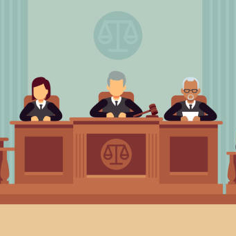

AI judges are primarily used to assist in decision-making,
risk assessment, and predicting recidivism.
They can process large volumes of data quickly, potentially leading to more
efficient judicial processes.
USES:
- Auxiliary administrative functions
- Communication between judicial personnel
- Allocation of resources and cases
- Score offenders risk of reoffending
- Recommends alternative punishment to
low risk people
- Ensures anonymisation of
decisions / documents / data
PROS:
- AI lowers the administrative burden of cases
- Increase court efficiency / reduce backlog of cases
- Allows for standardized outcomes
- Lower costs
- More accessible to people who cannot afford lawyers
- Improves fairness by:
following strict precedents
prevent personal bias
handle large amounts of information
- Can be used to help judges find relevant legal provisions and
thorough data retrieval which can improve judges understanding
and avoid one sided access to data
- Significantly increase the probability of offering alternative punishment
- Decrease probability of incarceration
- Shortens length of imprisonment
CONS:
- Allocation of cases to a specific judge based on
expertise / bias could indirectly influence outcome
- AI can perpetuate discrimination if allowed

AI SENTENCING:
AI calculates risk of repeat offense
People who AI deemed low-risk offenders
-> 16% lower incarceration for drug crimes
->11% lower incarceration for fraud
->6% lower incarceration for larceny
Decreases financial burden of states with high incarceration costs
AI decreased jail sentences by an average of 1 month
AI sentencing advice makes it less likely for offenders to be back in jail
Following AI sentencing recommendations reduces incarceration and recidivism
RACIAL BIAS
- Sentenced high-risk White and Black defendants equally
based on risk scores
- When AI recommended probation for low-risk offenders
judges disproportionally declined to offer alternative to
incarceration for Black defendants.
- Black defendants were given significantly lower alternative punishments
and longer jail terms than White counterparts
GENDER BIAS
Typically judges sentence females more leniently than males
- AI helped reduce gender bias